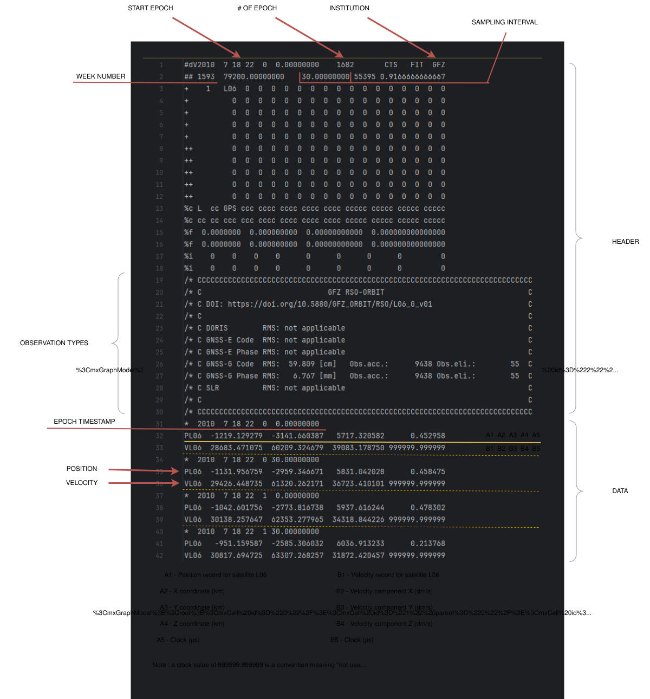

POD Engine¶
The POD Engine is the computation core of SpaceBench. When a run is submitted, the backend executes a multi-phase pipeline as an asynchronous background job.
Input Files¶
The pipeline requires exactly 4 input files from two source entities.
From the mission (GFZ / ISDC)¶
RINEX 2 observations (.rnx)
Onboard GPS receiver observations recorded by the LEO satellite. Contains pseudorange (C1/P1/P2), carrier phase (L1/L2), and Doppler measurements.

RSO SP3 — Reference Standard Orbit (.sp3)
The ground-truth reference trajectory for the LEO satellite. LEO satellite position in ECEF (km) and velocity (dm/s). The satellite clock field can be set to 999999.999999 if absent. Each file typically covers approximately 26 hours, with two overlapping arcs per day. For the provided CHAMP test data, this file is sourced from GFZ and the satellite identifier is L06.

From IGS / CDDIS (precise products)¶
IGS SP3 — precise GPS orbits (.sp3)
GPS satellite precise orbits (G01–G32) at 15-minute intervals, from the IGS repro2 reprocessed solution. File naming convention: igsWWWWD.sp3 (4-digit GPS week + day of week, 0 = Sunday).
IGS CLK_30S — precise GPS clocks (.clk_30s)
GPS satellite precise clock corrections at 30-second intervals. Uses AS records. Must come from the same weekly solution as the IGS SP3 file.

Why CLK_30S is mandatory
Interpolating the 15-minute SP3 clock values alone introduces approximately 10 cm of error. The 30-second CLK_30S file is required to keep the satellite clock correction at centimetre level (Montenbruck & Gill, 2005).
Why AR records are not used
In undifferenced (zero-difference) POD, the LEO receiver clock (δt_LEO) is estimated epoch-by-epoch as an unknown parameter — it is never read from any file. GPS satellite clocks (δt_S) are corrected via AS records from the CLK_30S file. AR records (ground station clocks) are only relevant in double-difference POD, which requires a ground reference network and is not used here.
Test Data Sources (CHAMP)¶
The example files bundled with SpaceBench cover two CHAMP observation days.
RINEX 2 observations¶
| Day | Archive |
|---|---|
| D246 (2010-09-03) | isdc-data.gfz.de/orbit/L06/RSO/2010/246/ |
Format spec: RINEX 2.10
RSO SP3 reference orbit¶
| Day | Archive |
|---|---|
| D246 / D200 | isdc-data.gfz.de/champ/OG/Level1/SST/2010/ |
Format spec: SP3-c
IGS SP3 + CLK_30S precise products (CDDIS repro2)¶
| Day | GPS Week | Archive |
|---|---|---|
| D246 (2010-09-03) | Week 1599 | cddis.nasa.gov/…/repro2/1599/ |
| D200 (2010-07-19) | Week 1593 | cddis.nasa.gov/…/1593/ |
Format specs: SP3-c · RINEX Clock 3.04
Reading IGS file names¶
IGS products follow the naming convention igsWWWWD, where WWWW is the 4-digit GPS week and D is the day of the week (0 = Sunday, 1 = Monday … 6 = Saturday).
Example: igs15931 → GPS week 1593, day 1 (Monday) → 2010-07-19 (D200)
Note
CDDIS requires a free account for downloading files.
Orbital Models¶
The orbital model defines how the satellite trajectory is parameterised during estimation.
Estimators¶
The estimator solves the observation equations and produces the estimated trajectory.
Asynchronous Pipeline¶
When a run is submitted, the backend immediately returns a run ID and launches the pipeline as a background task (FastAPI BackgroundTasks). The frontend does not block waiting for results.
Pipeline phases¶
| Phase | Description |
|---|---|
| 1 — Init | Run record created in DB, status set to running, orbital model and estimator logged |
| 2 — Validation | Input files checked for format correctness (validators: Sp3Validator, RnxValidator, ClkValidator) |
| 3 — Parse files | RINEX observation file parsed (epochs counted); IGS SP3 orbits, CLK_30S clocks, and RSO reference arcs (1/2, 2/2) loaded |
| 4 — Orbital model | Satellite trajectory parameterised according to the selected model (Kinematic, Dynamic, or Reduced-Dynamic) |
| 5 — Estimation | Iterative solver runs until convergence |
| 6 — Results | RMS 3D / Radial / Along / Cross computed against RSO, stored in DB, status set to done |
Run statuses¶
| Status | Meaning |
|---|---|
pending |
Run created, pipeline not yet started |
running |
Pipeline in progress |
done |
Pipeline completed successfully, RMS results available |
failed |
Pipeline encountered an unrecoverable error |